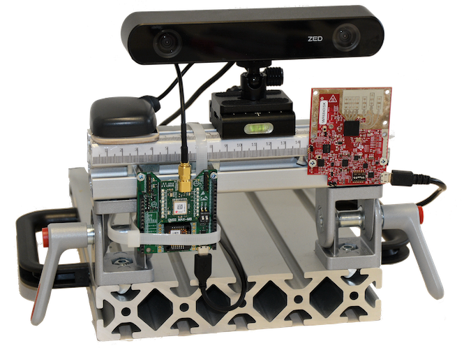

|
I am a first year PhD student at FAU Erlangen-Nürnberg, advised by Prof. Jörn Thielecke and Prof. Marc Stamminger. |

|
|
I'm interested in computer vision, precision agriculture, machine learning, and image processing. |
|  |
Lukas Meyer, Jonas Gedschold, Tim Erich Wegner, Giovanni Del Galdo, Adam Kalisz IEEE International Workshop on Metrology for Agriculture and Forestry (MetroAgriFor), 2022 bibtex |
|
This template was once created by Jon Barron an can now be stolen from here. |